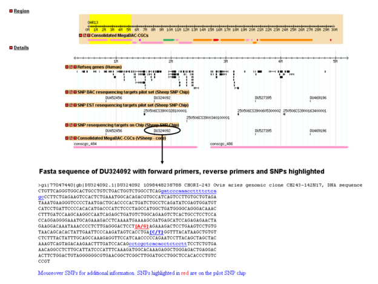
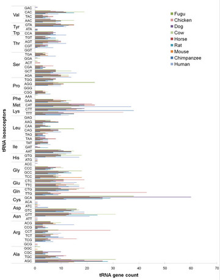
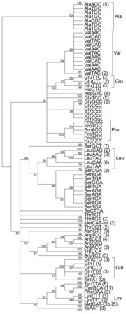

This presentation was written in HTML using the framework (io-2012-slides) developed by two Google developers (Eric Bidelman and Luke Mahé)
It is version controlled on GitHub and can be openly viewed on the web using GitHub pages
Pressing 'p' toggles speaker notes for the current slide
Pressing 'f' toggles fullscreen viewing
Pressing 'w' toggles widescreen
Pressing 'o' toggles overview mode
Pressing 'ESC' toggles off these goodies
About this presentation
Outline
Introduction of myself
Description of my support positions
I will only talk about these briefly
At The Commonwealth Scientific and Industrial Research Organisation (CSIRO)
At The University of Queensland (UQ)
Description of my research
On the annotation of transfer RNAs as part of the Bovine Genome project
On detecting biases in transcriptome sequencing
On the analysis of repetitive elements using transcriptome sequencing
About me
I was born in Hong Kong but left after my first birthday
I spent the next 15 years of my life growing up in Papua New Guinea
I then went to Brisbane for high school and university
Initially I wanted to pursue a PhD after my Honours but decided to get more experience
I worked as a bioinformatics research assistant at CSIRO and UQ
I decided I was ready to pursue a PhD in 2010 and left for Japan
I have both British and Australian citizenship
CSIRO
I helped maintain the local instance of GBrowse (a genome browser written in Perl) that was used by the division
This included preparing new genome browser tracks, maintaining the MySQL database, and the Apache2 web server
I developed a GBrowse plugin that allowed a user to download DNA sequence from the browser
Added additional functionality to the browser using Perl and JavaScript
I assisted with the development of the first sheep SNP array by selecting the candidate SNPs
GBrowse

UQ
I joined UQ as a Laboratory Information Management System developer for GUDMAP
I developed and implemented a suite of tools to assist the project
I developed a tool to design riboprobes for validating microarray results
I maintained all the data generated by the project
Bovine tRNAs
I was in charge of annotating putatively functional bovine tRNAs as part of the Bovine Genome Consortium
The bovine genome contains a large amount of tRNA-derived SINEs, which would come up as false positives
RepeatMasker was used to remove the SINEs
Comparative genomics was used to select a set of putatively functional tRNA genes
As well as creating a set of high-confidence tRNA genes, this work suggested the evolution of a specific bovine tRNA via a point mutation
Bovine tRNAs


My introduction to transcriptome sequencing
Prior to my PhD, I had no experience in RNA sequencing (RNA-Seq), despite coming from a lab that was one of the first to perform RNA-Seq
Initially I worked with a variant of Cap Analysis Gene Expression (CAGE) called nanoCAGE, which is based on a molecular mechanism known as template switching
The scientist who made the nanoCAGE libraries, by mistake, used different barcodes for technical replicates
After a while, I realised that the libraries were clustering by the barcode sequence used for a particular library
Thus I discovered barcode bias and implemented a computational strategy to mitigate this bias and helped improve the nanoCAGE technology